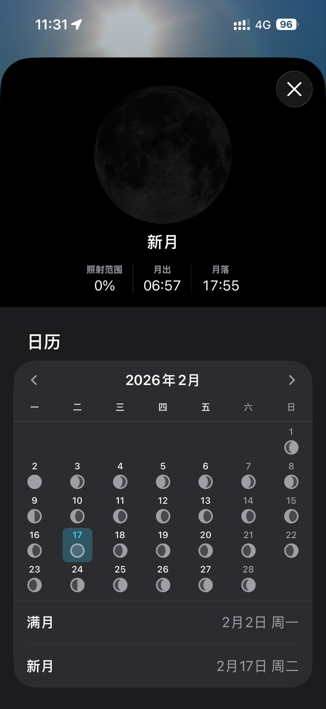

Rain Antares🏳️⚧️🍥
@Rain_Antar1121
@lazyplan 喵，如果闰十一月或十二月的话春节就在冬至后的第三个新月呢♡=•ㅅ＜=)
星空拍得很漂亮哦～是手动标的嘛很厉害哦૮₍ᵔ⤙ᵔ₎ა

lazyplan
@lazyplan
才知道农历新年日期是冬至后的第二个新月，一个朔望月周期≈29.5天，所以新年总是固定在1月21日到2月20日之间。因为是新月所以也特别适合观星呢～ https://t.co/lr7EWF6a3r